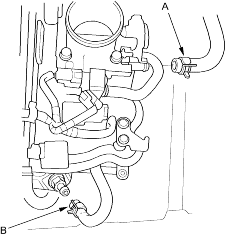
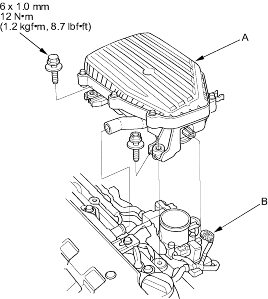
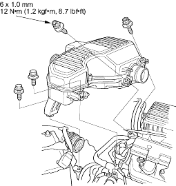

- Install the brake booster vacuum hose (A) and PCV hose (B).

- Install the air cleaner housing (A), then connect the IAT sensor connector (B) and breather hose.

- Install the intake resonator.

- Install the cruise control cable, then adjust the cable (see page 4-49).
- Install the throttle cable, then adjust the cable (see page 11-148).
- After installation, check that all tubes, hoses and connectors are installed correctly.
- Clean the battery posts and cable terminals with sandpaper, then assemble them and apply grease to prevent corrosion.
- Inspect for fuel leaks. Turn ON (II) the ignition switch (do not operate the starter) so that the fuel pump runs for approximately 2 seconds and pressurises the fuel line. Repeat this operation 2 or 3 times, then check for fuel leakage at any point in the fuel line.
- Refill the radiator with engine coolant and bleed air from the cooling system with the heater valve open (see page 10-8).
- Enter the anti-theft code for the radio, then enter the customer's radio station presets.